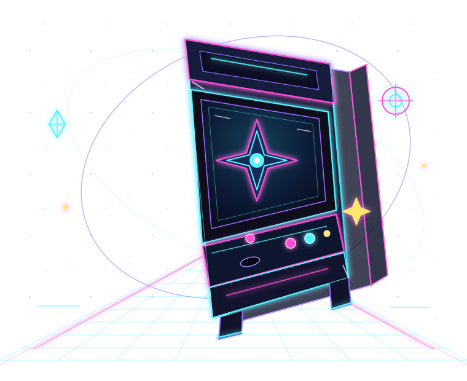

TEMPLATE SYSTEM
Front page, single posts, pages, archives, search, comments and a custom 404 template.
VIEW TEMPLATE MAPA responsive WordPress theme with original neon vector artwork, a bilingual interface and a clear technical story.

BUILT TO BE EXPLOREDThis is a theme showcase, not a static screenshot. The installable package contains the PHP templates, translation files, styles and frontend behavior behind this preview.
Front page, single posts, pages, archives, search, comments and a custom 404 template.
VIEW TEMPLATE MAPA visible language switcher stores the visitor’s selection and loads the French gettext catalog.
TRY THE SWITCHERMobile navigation, semantic landmarks, keyboard focus states and reduced-motion handling.
REVIEW CHECKLISTThe visual layer is backed by conventional WordPress theme APIs. Site owners can edit the hero copy, assign menus, upload a logo and publish posts from the dashboard.
A quick route through the details a technical reviewer or hiring manager may want to inspect.
A standard WordPress theme ZIP with a conventional theme directory structure.
French source catalog and compiled MO file are included in the package.
Uses WordPress posts, pages, menus, featured images and Customizer controls.
The demo runs from local files and does not require an external service.